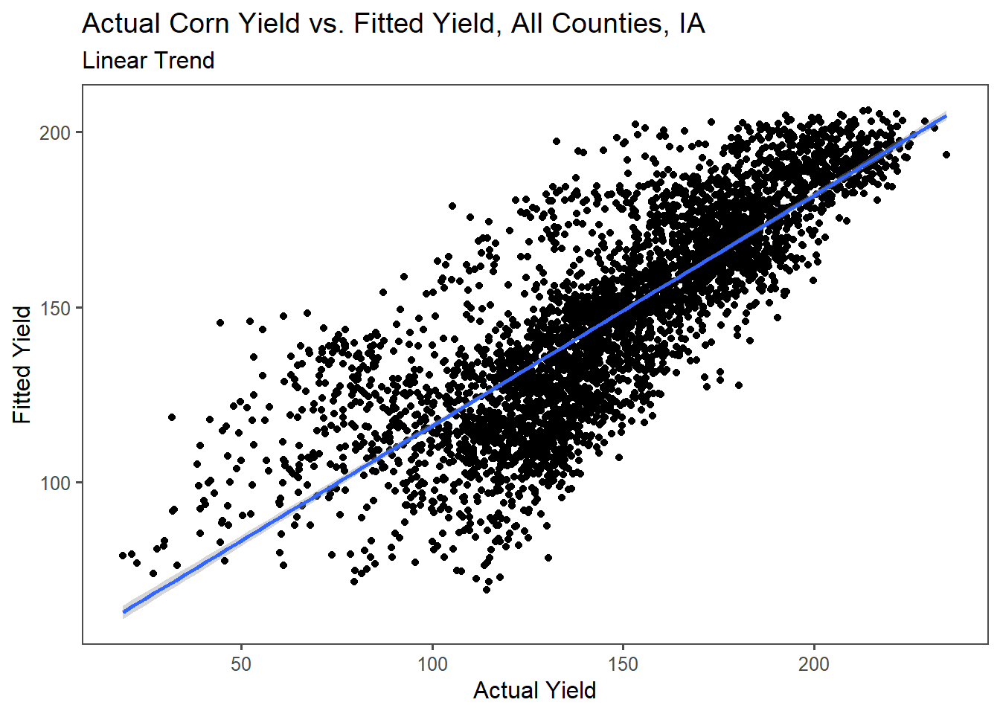

Chapter 7 Regressions using yield and temperature data
Composed by Nathan Mueller
7.1 Weather Data Analysis
7.1.1 Load the PRISM daily maximum temperatures
# daily max temperature
# dimensions: counties x days x years
prism <- readMat("C:/Users/13074/Documents/ESS580/weather_corn_regressions/data/prismiowa.mat")
# look at county #1
t_1981_c1 <- prism$tmaxdaily.iowa[1,,1]
t_1981_c1[366]## [1] NaNplot(1:366, t_1981_c1, type = "l")
ggplot() +
geom_line(mapping = aes(x=1:366, y = t_1981_c1)) +
theme_bw() +
xlab("day of year") +
ylab("daily maximum temperature (°C)") +
ggtitle("Daily Maximum Temperature, Iowa County #1")## Warning: Removed 1 row(s) containing missing values (geom_path).
# assign dimension names to tmax matrix
dimnames(prism$tmaxdaily.iowa) <- list(prism$COUNTYFP, 1:366, prism$years)
# converted 3d matrix into a data frame
tmaxdf <- as.data.frame.table(prism$tmaxdaily.iowa)
# relabel the columns
colnames(tmaxdf) <- c("countyfp","doy","year","tmax")
tmaxdf <- tibble(tmaxdf)7.2 Temperature trends
7.2.1 Summer temperature trends: Winneshiek County
tmaxdf$doy <- as.numeric(tmaxdf$doy)
tmaxdf$year <- as.numeric(as.character(tmaxdf$year))
winnesummer <- tmaxdf %>%
filter(countyfp==191 & doy >= 152 & doy <= 243) %>%
group_by(year) %>%
summarize(meantmax = mean(tmax))
ggplot(winnesummer, mapping = aes(x = year, y = meantmax)) +
geom_point() +
theme_bw() +
labs(x = "Year", y = "Tmax (°C)") +
geom_smooth(method = lm)## `geom_smooth()` using formula 'y ~ x'
lm_summertmax <- lm(meantmax ~ year, winnesummer)
summary(lm_summertmax)##
## Call:
## lm(formula = meantmax ~ year, data = winnesummer)
##
## Residuals:
## Min 1Q Median 3Q Max
## -2.5189 -0.7867 -0.0341 0.6859 3.7415
##
## Coefficients:
## Estimate Std. Error t value Pr(>|t|)
## (Intercept) 41.57670 36.44848 1.141 0.262
## year -0.00747 0.01823 -0.410 0.684
##
## Residual standard error: 1.232 on 36 degrees of freedom
## Multiple R-squared: 0.004644, Adjusted R-squared: -0.02301
## F-statistic: 0.168 on 1 and 36 DF, p-value: 0.68447.2.2 Winter Temperatures - Winneshiek County
winnewinter <- tmaxdf %>%
filter(countyfp==191 & (doy <= 59 | doy >= 335) & !is.na(tmax)) %>%
group_by(year) %>%
summarize(meantmax = mean(tmax))
ggplot(winnewinter, mapping = aes(x = year, y = meantmax)) +
geom_point() +
theme_bw() +
labs(x = "Year", y = "Tmax (°C)") +
geom_smooth(method = lm)## `geom_smooth()` using formula 'y ~ x'
lm_wintertmax <- lm(meantmax ~ year, winnewinter)
summary(lm_wintertmax)##
## Call:
## lm(formula = meantmax ~ year, data = winnewinter)
##
## Residuals:
## Min 1Q Median 3Q Max
## -3.5978 -1.4917 -0.3053 1.3778 4.5709
##
## Coefficients:
## Estimate Std. Error t value Pr(>|t|)
## (Intercept) -29.87825 60.48100 -0.494 0.624
## year 0.01368 0.03025 0.452 0.654
##
## Residual standard error: 2.045 on 36 degrees of freedom
## Multiple R-squared: 0.005652, Adjusted R-squared: -0.02197
## F-statistic: 0.2046 on 1 and 36 DF, p-value: 0.65377.2.3 Multiple regression – Quadratic time trend
# Squares the year value
winnewinter$yearsq <- winnewinter$year^2
# Fitting Linear Model to the year(sq) plus year.
lm_wintertmaxquad <- lm(meantmax ~ year + yearsq, winnewinter)
summary(lm_wintertmaxquad)##
## Call:
## lm(formula = meantmax ~ year + yearsq, data = winnewinter)
##
## Residuals:
## Min 1Q Median 3Q Max
## -3.3539 -1.2985 -0.2813 1.4055 4.2620
##
## Coefficients:
## Estimate Std. Error t value Pr(>|t|)
## (Intercept) -1.086e+04 1.238e+04 -0.877 0.386
## year 1.085e+01 1.239e+01 0.876 0.387
## yearsq -2.710e-03 3.097e-03 -0.875 0.388
##
## Residual standard error: 2.051 on 35 degrees of freedom
## Multiple R-squared: 0.02694, Adjusted R-squared: -0.02867
## F-statistic: 0.4845 on 2 and 35 DF, p-value: 0.6201# Fitting the linear model to the original winter df:
winnewinter$fitted <- lm_wintertmaxquad$fitted.values
#plotting the winter df with the linear model
ggplot(winnewinter) +
geom_point(mapping = aes(x = year, y = meantmax)) +
geom_line(mapping = aes(x = year, y = fitted)) +
theme_bw() +
labs(x = "year", y = "tmax")
7.3 Assignment
7.3.1 Question 1a:
Extract Winneshiek County corn yields, fit a linear time trend, make a plot. Is there a significant time trend?
The trend over the period of record shows a positive relationship between the yield of corn produced over time in Winneshiek, IA. The relevant statistic show the trend to be significant (p-value: 1.767e-13) with an R-squared of 0.749.
#Filtering for Winneshiek county
winne_corn <- cornyields %>%
filter(county_name == "WINNESHIEK")
ggplot(winne_corn, mapping = aes(x = year, y = yield)) +
geom_point() +
theme_bw() +
labs(x = "Year", y = "Corn Yield, (bushels per acre)") +
geom_smooth(method = lm) +
labs(title = "Average Corn Yield by Year, Winneshiek County, IA", subtitle = "Linear Trend")
lm_winne_corn <- lm(yield ~ year, winne_corn)
summary(lm_winne_corn)##
## Call:
## lm(formula = yield ~ year, data = winne_corn)
##
## Residuals:
## Min 1Q Median 3Q Max
## -51.163 -1.841 2.363 9.437 24.376
##
## Coefficients:
## Estimate Std. Error t value Pr(>|t|)
## (Intercept) -4763.290 448.286 -10.63 4.46e-13 ***
## year 2.457 0.224 10.96 1.77e-13 ***
## ---
## Signif. codes: 0 '***' 0.001 '**' 0.01 '*' 0.05 '.' 0.1 ' ' 1
##
## Residual standard error: 16.97 on 39 degrees of freedom
## Multiple R-squared: 0.7551, Adjusted R-squared: 0.7488
## F-statistic: 120.2 on 1 and 39 DF, p-value: 1.767e-137.3.2 Question 1b:
Fit a quadratic time trend (i.e., year + year^2) and make a plot. Is there evidence for slowing yield growth?
The quadratic time trend shows an increase in the amount of corn yield over the period of record. The relevant statistic show the trend to be significant (p-value: 2.311e-12) with an R-squared of 0.743.
# Squares the year value
winne_corn$yearsq <- winne_corn$year^2
# Fitting Linear Model to the year(sq) plus year.
lm_winne_corn_quad <- lm(yield ~ year + yearsq, winne_corn)
summary(lm_winne_corn_quad)##
## Call:
## lm(formula = yield ~ year + yearsq, data = winne_corn)
##
## Residuals:
## Min 1Q Median 3Q Max
## -51.384 -3.115 1.388 9.743 25.324
##
## Coefficients:
## Estimate Std. Error t value Pr(>|t|)
## (Intercept) 2.583e+04 8.580e+04 0.301 0.765
## year -2.812e+01 8.576e+01 -0.328 0.745
## yearsq 7.641e-03 2.143e-02 0.357 0.723
##
## Residual standard error: 17.17 on 38 degrees of freedom
## Multiple R-squared: 0.7559, Adjusted R-squared: 0.7431
## F-statistic: 58.84 on 2 and 38 DF, p-value: 2.311e-12# Fitting the linear model to the original winter df:
winne_corn$fitted <- lm_winne_corn_quad$fitted.values
#plotting the winter df with the linear model
ggplot(winne_corn) +
geom_point(mapping = aes(x = year, y = yield)) +
geom_line(mapping = aes(x = year, y = fitted), color = "blue", size = 1) +
theme_bw() +
labs(x = "Year", y = "Corn Yield, (bushels per acre)") +
labs(title = "Average Corn Yield by Year, Winneshiek County, IA", subtitle = "Quadratic Trend")
7.3.3 Question 2:
– Time Series: Let’s analyze the relationship between temperature and yields for the Winneshiek County time series. Use data on yield and summer avg Tmax. Is adding year or Tmax^2 to your model helpful? Make a plot and interpret the results.
In comparing average summer temperature to corn yield, the trend peaks and decreases around 27°C, suggesting that for the corn yield in Winneshiek county that corn yield decreases beyond a 27°C threshold (R-squared 0.7249, p-value: 7.584e-12). Adding year to the plot shows no demonstrable trend (Multiple and adjusted R-squared: 0.1984, p-value: 0.007).
#Want to join the tmaxdf to the corn yields df, then plot the two of them together...
#tmax is daily data, can filter by year. can use corn yield by year as well....
# *Use summer avg Tmax*
winn_summer_corn <- cornyields %>%
filter(county_name == "WINNESHIEK") %>%
arrange(year)
winn_summer_corn_temp <- left_join(winn_summer_corn,winnesummer, by='year') %>%
filter(!is.na(meantmax))
# Fitting Linear Model to the yield using year.
lm_winn_summer_corn_temp <- lm(yield ~ year, winn_summer_corn_temp)
summary(lm_winn_summer_corn_temp)##
## Call:
## lm(formula = yield ~ year, data = winn_summer_corn_temp)
##
## Residuals:
## Min 1Q Median 3Q Max
## -50.700 -2.623 2.662 9.134 24.575
##
## Coefficients:
## Estimate Std. Error t value Pr(>|t|)
## (Intercept) -4924.8563 511.2021 -9.634 1.67e-11 ***
## year 2.5376 0.2557 9.925 7.58e-12 ***
## ---
## Signif. codes: 0 '***' 0.001 '**' 0.01 '*' 0.05 '.' 0.1 ' ' 1
##
## Residual standard error: 17.28 on 36 degrees of freedom
## Multiple R-squared: 0.7324, Adjusted R-squared: 0.7249
## F-statistic: 98.51 on 1 and 36 DF, p-value: 7.584e-12# Fitting the linear model to the original winter df:
winn_summer_corn_temp$fitted_year <- lm_winn_summer_corn_temp$fitted.values
# Squares the tmax value
winn_summer_corn_temp$meantmaxsq <- winn_summer_corn_temp$meantmax^2
# Fitting Linear Model to the meantmax(sq) plus meantmax.
lm_winn_summer_corn_temp2 <- lm(yield ~ meantmax + meantmaxsq, winn_summer_corn_temp)
summary(lm_winn_summer_corn_temp2)##
## Call:
## lm(formula = yield ~ meantmax + meantmaxsq, data = winn_summer_corn_temp)
##
## Residuals:
## Min 1Q Median 3Q Max
## -56.587 -22.262 -0.982 22.409 52.798
##
## Coefficients:
## Estimate Std. Error t value Pr(>|t|)
## (Intercept) -4223.604 1446.639 -2.920 0.00609 **
## meantmax 328.918 107.068 3.072 0.00410 **
## meantmaxsq -6.173 1.979 -3.119 0.00362 **
## ---
## Signif. codes: 0 '***' 0.001 '**' 0.01 '*' 0.05 '.' 0.1 ' ' 1
##
## Residual standard error: 29.5 on 35 degrees of freedom
## Multiple R-squared: 0.2417, Adjusted R-squared: 0.1984
## F-statistic: 5.579 on 2 and 35 DF, p-value: 0.007887# Fitting the linear model to the original winter df:
winn_summer_corn_temp$fitted_max <- lm_winn_summer_corn_temp2$fitted.values
winn_summer_corn_temp$fitted_year <- lm_winn_summer_corn_temp$fitted.values
#plotting the winter df with the linear model. Fitted year commented out.
ggplot(winn_summer_corn_temp) +
geom_point(mapping = aes(x = meantmax, y = yield)) +
geom_line(mapping = aes(x = meantmax, y = fitted_max, color = "Fitted T max"), size = 1) +
#geom_line(mapping = aes(x = meantmax, y = fitted_year, color = "Year"), size = 1) +
theme_few() +
labs(x = "Mean Summer Temperature (°C)", y = "Corn Yield, (bushels per acre)") +
theme(legend.position = c(0.9,0.8)) +
labs(color="Trend")+
labs(title = "Average Corn Yield vs. Max Summer Temp, Winneshiek County, IA", subtitle = "Quadratic Trend")
7.3.4 Question 3:
– Cross-Section: Analyze the relationship between temperature and yield across all counties in 2018. Is there a relationship? Interpret the results.
For 2018, the corn yield for all counties in Iowa had a negative trend for an increase in temperature. The trend is not significant however, and weakly correlated (Adjusted R-squared: 0.02687, p-value: 0.063).
# Want yield for all counties, 2018:
county_yield <- cornyieldsall %>%
filter(year == 2018) %>%
group_by(county_name) %>%
unique() %>%
filter(!is.na(county_ansi))
#Want maximum summer temperatures (presumably) for 2018, per county.
county_summer <- tmaxdf %>%
group_by(countyfp) %>%
filter(year == 2018) %>%
filter(doy >= 152 & doy <= 243) %>%
summarize(meantmax = mean(tmax)) %>%
rename(county_ansi = "countyfp")
county_summer$county_ansi <- as.numeric(as.character(county_summer$county_ansi))
#Joining the two dfs together
county_summer_yield <- left_join(county_yield,county_summer, by='county_ansi')# %>%
#plot
ggplot(county_summer_yield, mapping = aes(x = meantmax, y = yield)) +
geom_point() +
theme_bw() +
labs(x = "Max Summer Temp (°C)", y = "Corn Yield, (bushels per acre)") +
geom_smooth(method = lm) +
labs(title = "Average Corn Yield vs. Max Summer Temp, All Counties, IA (2018)", subtitle = "Linear Trend")
# Fitting Linear Model to the yield and mean T max:.
lm_county_summer_yield <- lm(yield ~ meantmax, county_summer_yield)
summary(lm_county_summer_yield)##
## Call:
## lm(formula = yield ~ meantmax, data = county_summer_yield)
##
## Residuals:
## Min 1Q Median 3Q Max
## -42.983 -15.041 0.955 16.795 31.999
##
## Coefficients:
## Estimate Std. Error t value Pr(>|t|)
## (Intercept) 312.466 63.387 4.929 3.69e-06 ***
## meantmax -4.216 2.241 -1.882 0.0631 .
## ---
## Signif. codes: 0 '***' 0.001 '**' 0.01 '*' 0.05 '.' 0.1 ' ' 1
##
## Residual standard error: 19.64 on 91 degrees of freedom
## Multiple R-squared: 0.03745, Adjusted R-squared: 0.02687
## F-statistic: 3.541 on 1 and 91 DF, p-value: 0.063087.3.5 Question 4:
– Panel: One way to leverage multiple time series is to group all data into what is called a “panel” regression. Convert the county ID code (“countyfp” or “county_ansi”) into factor using as.factor, then include this variable in a regression using all counties’ yield and summer temperature data. How does the significance of your temperature coefficients (Tmax, Tmax^2) change? Make a plot comparing actual and fitted yields and interpret the results of your model.
Including the temperature coefficients, year and county into the fitted yield shows a plot with increased potential output compared to the actual yield. While the fitted yield has a larger spread including some below 50 BPA, the majority of the spread is larger than 150 for the fitted yield, whereas half of the actual yield appears to be less than 175 BPA. Thus, the temperature and year by county has a significant positive influence upon the corn yield for the time series (R-squared: 0.6493, p-value: < 2.2e-16).
# Want yield for all counties, all years:
county_yield_panel <- cornyieldsall %>%
group_by(county_name) %>%
unique() %>%
filter(!is.na(county_ansi))
#Want maximum summer temperatures per county.
county_summer_panel <- tmaxdf %>%
group_by(countyfp) %>%
filter(doy >= 152 & doy <= 243) %>%
summarize(meantmax = mean(tmax)) %>%
rename(county_ansi = "countyfp")
county_summer_panel$county_ansi <- as.numeric(as.character(county_summer_panel$county_ansi))
#Joining the two dfs together
county_summer_yield_panel <- left_join(county_yield_panel,county_summer_panel, by='county_ansi')
# combined yield and summer temperature df for all counties
county_summer_yield_panel <- subset(county_summer_yield_panel, select = c(county_ansi, yield, meantmax, year))
#making the county_ansi into a factor:
county_summer_yield_panel$county_ansi <- as.factor(county_summer_yield_panel$county_ansi)
#confirming it is a factor
#str(county_summer_yield_panel$county_ansi)
# Squares the tmax value
county_summer_yield_panel$meantmaxsq <- county_summer_yield_panel$meantmax^2
lm_county_summer_yield_panel <- lm(yield ~ county_ansi + meantmax + meantmaxsq + year, county_summer_yield_panel)
summary(lm_county_summer_yield_panel)##
## Call:
## lm(formula = yield ~ county_ansi + meantmax + meantmaxsq + year,
## data = county_summer_yield_panel)
##
## Residuals:
## Min 1Q Median 3Q Max
## -101.016 -9.576 3.141 14.498 52.720
##
## Coefficients: (2 not defined because of singularities)
## Estimate Std. Error t value Pr(>|t|)
## (Intercept) -4.447e+03 5.773e+01 -77.031 < 2e-16 ***
## county_ansi3 -4.038e+00 4.822e+00 -0.838 0.402346
## county_ansi5 1.137e+01 4.762e+00 2.387 0.017012 *
## county_ansi7 -1.875e+01 4.791e+00 -3.913 9.27e-05 ***
## county_ansi9 9.961e+00 4.762e+00 2.092 0.036510 *
## county_ansi11 1.214e+01 4.762e+00 2.550 0.010815 *
## county_ansi13 1.400e+01 4.762e+00 2.940 0.003305 **
## county_ansi15 1.794e+01 4.762e+00 3.767 0.000168 ***
## county_ansi17 1.907e+01 4.762e+00 4.006 6.30e-05 ***
## county_ansi19 1.618e+01 4.762e+00 3.398 0.000687 ***
## county_ansi21 1.527e+01 4.762e+00 3.207 0.001352 **
## county_ansi23 1.620e+01 4.762e+00 3.403 0.000674 ***
## county_ansi25 1.611e+01 4.762e+00 3.384 0.000721 ***
## county_ansi27 1.444e+01 4.762e+00 3.032 0.002443 **
## county_ansi29 7.471e+00 4.762e+00 1.569 0.116740
## county_ansi31 1.950e+01 4.762e+00 4.095 4.30e-05 ***
## county_ansi33 1.259e+01 4.762e+00 2.643 0.008249 **
## county_ansi35 1.961e+01 4.791e+00 4.094 4.32e-05 ***
## county_ansi37 1.136e+01 4.762e+00 2.385 0.017131 *
## county_ansi39 -2.391e+01 4.854e+00 -4.926 8.76e-07 ***
## county_ansi41 1.311e+01 4.762e+00 2.752 0.005948 **
## county_ansi43 1.667e+01 4.762e+00 3.502 0.000468 ***
## county_ansi45 1.564e+01 4.762e+00 3.285 0.001027 **
## county_ansi47 1.308e+01 4.762e+00 2.748 0.006032 **
## county_ansi49 1.140e+01 4.762e+00 2.394 0.016730 *
## county_ansi51 -1.835e+01 4.791e+00 -3.829 0.000130 ***
## county_ansi53 -1.692e+01 4.854e+00 -3.485 0.000497 ***
## county_ansi55 1.784e+01 4.762e+00 3.746 0.000182 ***
## county_ansi57 9.205e+00 4.791e+00 1.921 0.054767 .
## county_ansi59 9.586e+00 4.762e+00 2.013 0.044179 *
## county_ansi61 1.847e+01 4.762e+00 3.879 0.000107 ***
## county_ansi63 1.505e+01 4.791e+00 3.141 0.001694 **
## county_ansi65 1.564e+01 4.762e+00 3.284 0.001031 **
## county_ansi67 1.292e+01 4.762e+00 2.713 0.006703 **
## county_ansi69 1.818e+01 4.762e+00 3.818 0.000137 ***
## county_ansi71 5.283e+00 4.791e+00 1.103 0.270241
## county_ansi73 1.652e+01 4.762e+00 3.469 0.000528 ***
## county_ansi75 1.861e+01 4.762e+00 3.908 9.45e-05 ***
## county_ansi77 5.432e+00 4.762e+00 1.141 0.254046
## county_ansi79 1.771e+01 4.791e+00 3.696 0.000222 ***
## county_ansi81 1.725e+01 4.762e+00 3.622 0.000296 ***
## county_ansi83 1.844e+01 4.762e+00 3.873 0.000109 ***
## county_ansi85 6.308e+00 4.822e+00 1.308 0.190871
## county_ansi87 2.288e+00 4.762e+00 0.481 0.630897
## county_ansi89 9.930e+00 4.762e+00 2.085 0.037110 *
## county_ansi91 1.767e+01 4.762e+00 3.711 0.000210 ***
## county_ansi93 1.811e+01 4.791e+00 3.780 0.000159 ***
## county_ansi95 9.245e+00 4.791e+00 1.930 0.053723 .
## county_ansi97 5.466e+00 4.762e+00 1.148 0.251074
## county_ansi99 1.824e+01 4.791e+00 3.808 0.000142 ***
## county_ansi101 -5.980e+00 4.762e+00 -1.256 0.209229
## county_ansi103 6.598e+00 4.791e+00 1.377 0.168575
## county_ansi105 1.373e+01 4.791e+00 2.867 0.004168 **
## county_ansi107 1.115e+00 4.762e+00 0.234 0.814897
## county_ansi109 1.977e+01 4.762e+00 4.152 3.37e-05 ***
## county_ansi111 -4.163e+00 4.762e+00 -0.874 0.382010
## county_ansi113 1.244e+01 4.791e+00 2.597 0.009438 **
## county_ansi115 4.693e+00 4.762e+00 0.986 0.324418
## county_ansi117 -2.157e+01 4.854e+00 -4.444 9.08e-06 ***
## county_ansi119 1.481e+01 4.762e+00 3.109 0.001890 **
## county_ansi121 -1.192e+00 4.762e+00 -0.250 0.802273
## county_ansi123 8.393e+00 4.762e+00 1.763 0.078051 .
## county_ansi125 2.008e+00 4.791e+00 0.419 0.675200
## county_ansi127 2.113e+01 4.791e+00 4.410 1.06e-05 ***
## county_ansi129 5.207e+00 4.822e+00 1.080 0.280268
## county_ansi131 1.599e+01 4.762e+00 3.358 0.000792 ***
## county_ansi133 2.612e-01 4.762e+00 0.055 0.956257
## county_ansi135 -1.605e+01 4.791e+00 -3.350 0.000815 ***
## county_ansi137 4.193e+00 4.762e+00 0.881 0.378621
## county_ansi139 8.454e+00 4.762e+00 1.775 0.075914 .
## county_ansi141 2.138e+01 4.762e+00 4.489 7.36e-06 ***
## county_ansi143 1.623e+01 4.762e+00 3.409 0.000659 ***
## county_ansi145 -2.161e+00 4.762e+00 -0.454 0.650018
## county_ansi147 1.421e+01 4.762e+00 2.985 0.002856 **
## county_ansi149 1.130e+01 4.791e+00 2.359 0.018392 *
## county_ansi151 1.804e+01 4.791e+00 3.765 0.000169 ***
## county_ansi153 1.409e+01 4.762e+00 2.959 0.003104 **
## county_ansi155 1.127e+01 4.791e+00 2.353 0.018674 *
## county_ansi157 1.190e+01 4.762e+00 2.499 0.012509 *
## county_ansi159 -2.032e+01 4.791e+00 -4.242 2.27e-05 ***
## county_ansi161 1.610e+01 4.762e+00 3.382 0.000728 ***
## county_ansi163 1.999e+01 4.762e+00 4.199 2.74e-05 ***
## county_ansi165 1.242e+01 4.791e+00 2.592 0.009582 **
## county_ansi167 2.028e+01 4.762e+00 4.258 2.11e-05 ***
## county_ansi169 1.564e+01 4.762e+00 3.284 0.001033 **
## county_ansi171 1.459e+01 4.762e+00 3.065 0.002194 **
## county_ansi173 -1.492e+01 4.791e+00 -3.115 0.001853 **
## county_ansi175 -1.017e+01 4.791e+00 -2.122 0.033861 *
## county_ansi177 -1.457e+01 4.762e+00 -3.060 0.002225 **
## county_ansi179 -5.617e+00 4.791e+00 -1.172 0.241117
## county_ansi181 -2.341e+00 4.822e+00 -0.485 0.627358
## county_ansi183 8.595e+00 4.791e+00 1.794 0.072894 .
## county_ansi185 -2.081e+01 4.791e+00 -4.344 1.44e-05 ***
## county_ansi187 2.026e+01 4.762e+00 4.254 2.15e-05 ***
## county_ansi189 1.695e+01 4.762e+00 3.560 0.000375 ***
## county_ansi191 1.315e+01 4.762e+00 2.761 0.005792 **
## county_ansi193 6.556e+00 4.762e+00 1.377 0.168630
## county_ansi195 1.511e+01 4.762e+00 3.174 0.001517 **
## county_ansi197 1.816e+01 4.762e+00 3.813 0.000139 ***
## meantmax NA NA NA NA
## meantmaxsq NA NA NA NA
## year 2.292e+00 2.881e-02 79.557 < 2e-16 ***
## ---
## Signif. codes: 0 '***' 0.001 '**' 0.01 '*' 0.05 '.' 0.1 ' ' 1
##
## Residual standard error: 21.43 on 3915 degrees of freedom
## Multiple R-squared: 0.6579, Adjusted R-squared: 0.6493
## F-statistic: 76.05 on 99 and 3915 DF, p-value: < 2.2e-16#str(county_summer_yield)
#head(county_summer_yield_panel)
county_summer_yield_panel$fitted <- lm_county_summer_yield_panel$fitted.values
#plotting the df with the linear and fitted model
ggplot(county_summer_yield_panel) +
geom_point(mapping = aes(x = yield, y = fitted)) +
geom_smooth(mapping = aes(x = yield, y = fitted),method = lm) +
theme_few() +
labs(x = "Actual Yield", y = "Fitted Yield") +
labs(title = "Actual Corn Yield vs. Fitted Yield, All Counties, IA", subtitle = "Linear Trend")
7.3.6 Question 5:
– Soybeans: Download NASS data on soybean yields and explore either a time series relationship for a given county, the cross-sectional relationship for a given year, or a panel across all counties and years.
Soybean yield per year shows a positive trend that is significant for the period of record (R-squared: 0.60, p-value: 9.968e-09).
# set our API key with NASS in previous code chunk (ommited)
# parameters to query on, with "statisticcat_desc= "YIELD"" changed:
params2 <- list(commodity_desc = "SOYBEANS", statisticcat_desc= "YIELD", prodn_practice_desc = "ALL PRODUCTION PRACTICES", year__GE = 1981, state_alpha = "IA")#str(soyyieldsall)
soyyieldsall$county_ansi <- as.numeric(soyyieldsall$county_ansi)
soyyieldsall$yield <- as.numeric(soyyieldsall$Value)
# clean and filter this dataset
soyyields <- select(soyyieldsall, county_ansi, county_name, yield, year) %>%
filter(!is.na(county_ansi) & !is.na(yield))
soyyields <- tibble(soyyields)
#Filter for Clinton County
clinton_soy <- soyyields %>%
filter(county_name == "WINNESHIEK")
# Fitting Linear Model to the year(sq) plus year.
clinton_soy$yearsq <- clinton_soy$year^2
#Determining a linear yield by year
lm_clinton_soy <- lm(yield ~ year + yearsq, clinton_soy)
summary(lm_clinton_soy)##
## Call:
## lm(formula = yield ~ year + yearsq, data = clinton_soy)
##
## Residuals:
## Min 1Q Median 3Q Max
## -14.2433 -3.5243 0.9022 3.7709 8.1962
##
## Coefficients:
## Estimate Std. Error t value Pr(>|t|)
## (Intercept) -4.223e+03 2.808e+04 -0.150 0.881
## year 3.681e+00 2.807e+01 0.131 0.896
## yearsq -7.737e-04 7.014e-03 -0.110 0.913
##
## Residual standard error: 5.619 on 38 degrees of freedom
## Multiple R-squared: 0.6208, Adjusted R-squared: 0.6008
## F-statistic: 31.1 on 2 and 38 DF, p-value: 9.968e-09clinton_soy$fitted <- lm_clinton_soy$fitted.values
geom_line(mapping = aes(x = year, y = fitted, color = "Year"), size = 1) ## mapping: x = ~year, y = ~fitted, colour = Year
## geom_line: na.rm = FALSE, orientation = NA
## stat_identity: na.rm = FALSE
## position_identityggplot(clinton_soy, mapping = aes(x = year, y = yield)) +
geom_line(mapping = aes(x = year, y = fitted), color = "red", size = 1) +
geom_point() +
theme_bw() +
labs(x = "Year", y = "Soybean Yield, (bushels per acre)") +
labs(title = "Average Soybean Yield by Year, Clinton County, IA", subtitle = "Linear Trend")
7.4 Bonus
7.4.1 Bonus 1:
Find a package to make a county map of Iowa displaying some sort of information about yields or weather. Interpret your map.
Figure shows 1986 soybean yields (bushels per acre). That year Clark County had a lower than average yield (29.3 BPA), while Scott County had the highest (46.9 BPA). Both the upper and lower regions of the state experienced comparatively lower yields than the middle region.
#Downloading Iowa County SF
iowa <- us_counties(states = "Iowa")
#str(iowa)
iowa_map <- iowa %>%
st_transform(2163)
# Removing duplicate columns that interfere with the join
iowa_map <- subset(iowa_map, select = -c(state_name, statefp))
iowa_map$name <- toupper(iowa_map$name)
#mapview(iowa_map)
soy_map <- soyyields %>%
group_by(yield, year) %>%
filter(year == 1986) %>%
rename(name = "county_name")
# The lack of apostrophe was not allowing for a join
soy_map$name<-replace(soy_map$name, soy_map$name == "O BRIEN", "O'BRIEN")
#Join
iowa_soybean_map <- inner_join(iowa_map, soy_map, by = "name")
mapview(iowa_soybean_map, zcol = 'yield', layer.name = "Soybean Yield (BPA)")